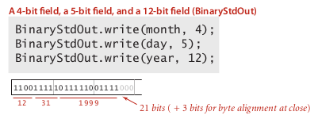

1. Introduction to Data Compression
===================================
pb: reduce the size of a file, to save space/time for storing/transmitting.
applications: generic file compression(gzip), multimedia (mp3), communication(skype).
From binary data B, ⇒ generate a compressed representation C(B).

lossless compression: get exactly B from C(B)
compression ratio: |C(B)|/|B|(||means number of bits)
Tools
extension to stdio libraries: read/write bits
public class BinaryStdIn{ boolean readBoolean(); // read 1 bit and return as a boolean char readChar(); // read 8 bits and return a char char readChar(int r); // read r (<=8) bits and return a char // similar method for int/long/double boolean isEmpty(); // is bitstream empty? void close(); } public class BinaryStdOut{ void write(boolean b); // write 1 bit void write(char c); // write 8 bits void write(char c, int r); // write r (least-significant) bits of c // similar method for int/long/double void close(); // might add some byte alignment bits }
usage example: store a date 12/31/1999

universal date compression?
prop. NO algorithm can compress every bitstring.
pf. by contradiction: repeatedly compress the bitstring ⇒ bit length goes to 0.
2. Run-Length Coding
one simple type of redundancy in bitstream: long runs of repeated bits.
⇒ use 4-bit counts to represent alternating 1s and 0s.

- question1: how many bits to represent counts ? ⇒ pick 8 bits (just tradeoff)
- question2: what if run length is bigger than max length(2^8)? ⇒ just add length=0 of the alternating bit...
application: JPEG...
code:
public class RunLength{ private final static int R = 256; // max run length private final static int lgR = 8; public static void compress(){ boolean bit, oldbit = false; int l=0; while(!BinaryStdIn.isEmpty()){ bit = BinaryStdIn.readBoolean(); if(bit!=old){ oldbit = bit; BinaryStdOut.write(l,lgR); l = 0; } else if(l==R-1){ BinaryStdOut.write(l,lgR); BinaryStdOut.write(0,lgR); l = 0; } l ++; } BinaryStdOut.write(l,lgR); BinaryStdOut.close(); } public static void expand(){ boolean bit = false; while(!BinaryStdIn.isEmpty()){ int l = BinaryStdIn.readInt(lgR); for(int i=0;i<l;i++) BinaryStdOut.write(bit); bit != bit; } BinaryStdOut.close(); } }
3. Huffman Compression
classique...
idea: variable length code.
ex. Morse code, more freq chars use less chars.
→ pb: ambiguity? one code is the prefix of another...
→ need to use prefix-free code
⇒ use a trie to represent the prefix-free code, in bitstream, use a binary trie:

Huffman Trie Node
define trie nodes having frequences:
public static class Node implements Comparable<Node>{ private char ch; // only used for leaves, null for internal nodes private int freq; private final Node left, right; // left-->0, right-->1 public Node(char ch, int freq, Node left, Node right){//...} public boolean isLeaf(){ return left==null && right==null;} public int compareTo(Node that){ return this.freq-that.freq;} }
implementation
expansion
in the bitstream, we first put the (serialized) trie in the head.
public void expand{ Node root = getTrie(); // int N = BinaryStdIn.readInt(); // number of chars in string for(int i=0; i<N; i++){ Node x = root; while (!x.isLeaf()){ if(BinaryStdIn.readBoolean()) x = x.right; else x = x.left; } BinaryStdOut.write(x.ch); } BinaryStdOut.close(); }
output trie
ie. to serialize a trie.
⇒ use preorder traversal:
0 for internal nodes, and 1 for leaf (followed by the corresponding char)

recursive method:
private static void writeTrie(Node x){ if(x==null) return; if(x.isLeaf()){ BinaryStdOut.write(true); // leaf node BinaryStdOut.write(x.ch); // followed by the char } else { BinaryStdOut.write(false); // internal node writeTrie(x.left); writeTrie(x.right); } }
read trie
Reconstruct the trie from the serialized bitstring.
preorder(x) = x+preorder(x.left)+preorder(x.right) ⇒ recursive method...
这个递归函数还是蛮有代表性的, 值得看.
private static Node readTrie(){ if(BinaryStdOut.readBoolean()) { char ch = BinaryStdOut.readChar(); return new Node(ch, 0, null, null); } else { Node left = readTrie(); Node right = readTrie(); return new Node('\0', 0, left, right); // subtle recursion } }
Huffman algorithm
pb: how to find the best prefixless code?
Shannon-Fano algo:
- partition symbols S into 2 subsets: S1, S0, with roughly equal freq
- code in S1 start with 1 and in S0 start with 0
- recur on S1 and S0
[Huffman algo] (1950)
- count letter freq in input
- build a node for each char
- select the 2 tries with minimum weight(freq), merge them, and put it back
- repeat until we get only 1 trie

application: jpeg, pdf, mp3, ...
implementation
private static Node buildTrie(int[] freq){ MinPQ<Node> pq = new MinPQ<Node>(); for(char i=0; i<R; i++) pq.insert( new Node(i, freq[i], null, null) ); while(pq.size()>1){ Node x = pq.pop(), y = pq.pop(); pq.insert( new Node('\0',x.freq+y.freq, x, y); } return pq.top(); }
prop. Huffman algorithm produces the optimal prefixless code.
running time: N + RlgR
4. LZW Compression
idea:
adaptive model: learn and update the model as you read the text.
decoder will do the same thing.
build a table of not only mapping chars to codes, but also mapping >=2-char combinations to codes(of fixed width).
when encoding strings, look for the longest prefix that is in our table.

LZW compression
LZW compression algo
- create a symbol table mapping string keys to W-bit code, initialize as mapping only chars to codes
- find longest prefix
sof the unscanned input - write out the corresponding code
- add
s+cinto the symbol table, wherecis the next char in input
Use a trie for representing the code table → because support longest prefix match.
implementation
public void compress(String input){ TST<Integer> st = new TST<Integer>(); // a trie symbol table for(char i=0; i<R; i++) st.put(""+(char)i, i); int code = R+1; // R is used as "stop" while(input.length()>0){ String s = st.longestPrefixOf(input); BinaryStdOut.write(st.get(s), W); int l = s.length(); if(l<input.length()) st.put(s+input.charAt(l), code++); input = input.substring(l); } BinaryStdOut.write(R, W); // write "stop" BinaryStdOut.close(); }
LZW expansion
no need to get the codeword table, the input is just the compressed bitstring.
- maintain a (reverse)table mapping int(code) to strings.
- as we decode the string, we add new entries to our table.
to represent the table: just an array.
note when add new entries: add key = s+c, where s is the last decoded string, c is the first char of the currently decoded string.

example: when decoded ABR, s = BR, currently decoded string = ABR, so we add BRA.
tricky case: ABABABA
compression

problem in expansion when reading the "83":

→ need to be able to update the table when encountering a code not yet defined...
Summary
- Huffman: fixed-length symbols, with variable-length codes.
- LZW: variable-length symbols, with fixed-length codes.
theoretical limit:

还剩下一周的内容, 可能要等到二月底考完以后有时间再看了, 现在先复习备考...

Comments !